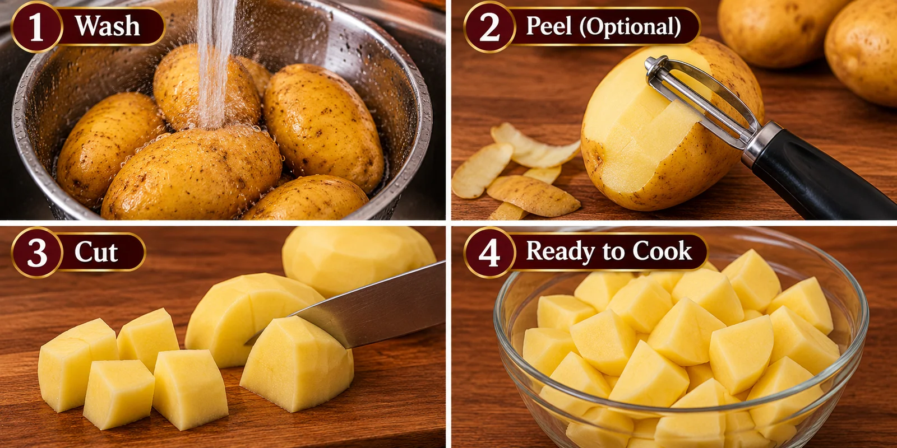
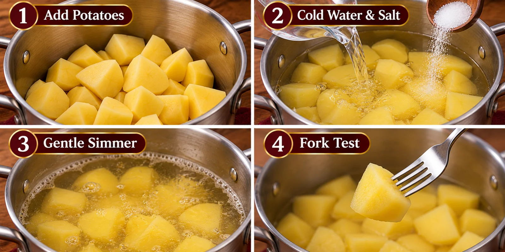
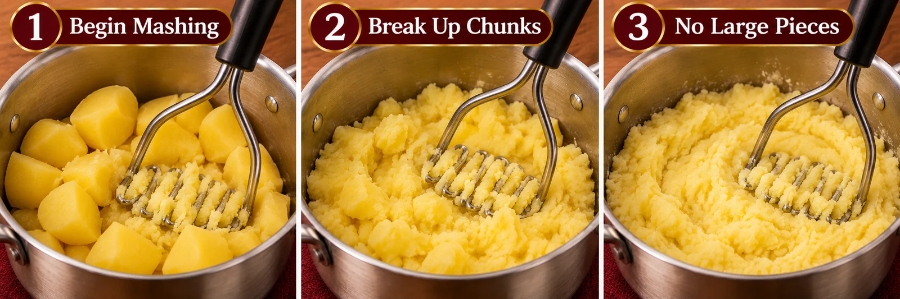
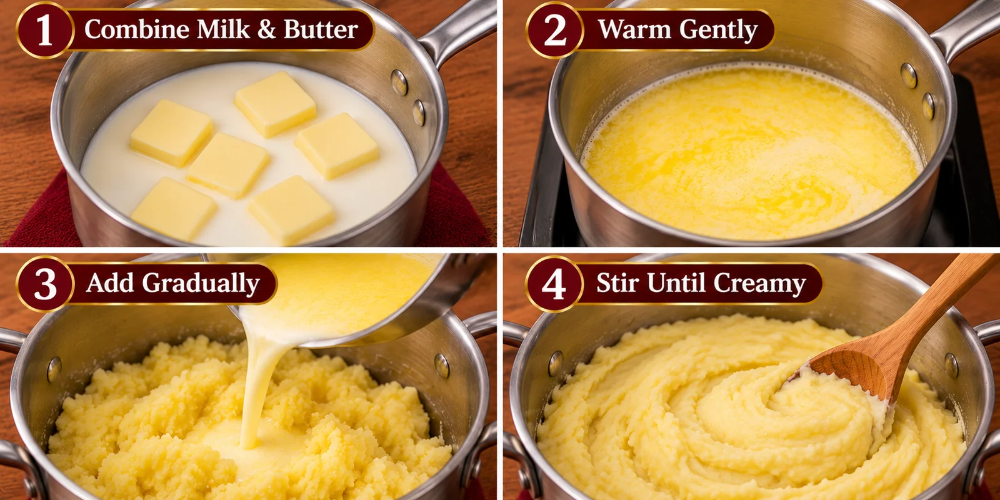
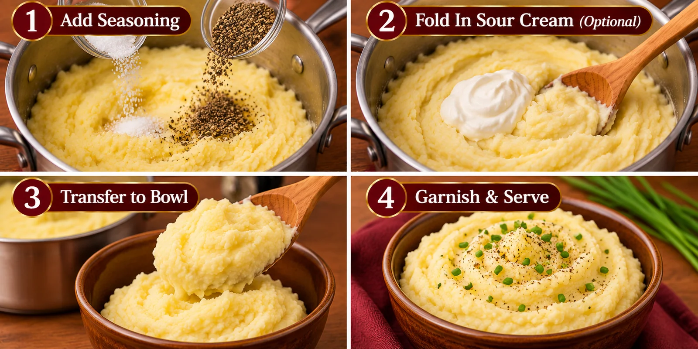

Creamy Homemade Mashed Potatoes
Creamy, buttery mashed potatoes made with everyday equipment. A reliable stovetop method with optional sour cream for a little tang.
Difficulty: Beginner • Total time: About 40–55 minutes
Equipment: Large pot, colander, potato masher, small saucepan, whisk or spoon, measuring cups.
Ingredients
| Ingredient | Amount |
|---|---|
| Yukon Gold potatoes (or russets) | 3 pounds |
| Unsalted butter | 6 tablespoons |
| Whole milk | ¾ cup; add gradually |
| Sour cream (optional) | ¼ cup |
| Fine salt for finishing | Start with ½ teaspoon; add to taste |
| Black pepper | ¼ teaspoon |
| Salt for cooking water | 1 tablespoon |
| Water | Enough to cover potatoes by 1 inch |
Before You Start and Equipment
Yukon Gold potatoes make naturally creamy mash; russets give a fluffier result. Peel for a smooth finish, or leave some skin on for a rustic texture. Keep the potatoes in similarly sized pieces so they finish cooking together.
Step-by-Step Instructions
1. Prepare the potatoes • 10–15 minutes
Rinse and scrub 3 pounds of potatoes. Peel if desired, then cut into pieces about 1½ inches across. Try to make them similar in size so the small pieces do not overcook while larger ones remain firm.

2. Cook until fork-tender • about 15–20 minutes after boiling
Place the cut potatoes in a large pot, cover with cold water by about 1 inch, and add 1 tablespoon salt. Bring to a boil over high heat, then lower to a steady, gentle simmer. Start checking after 15 minutes. A fork should slide through the center of a piece without resistance. If still firm, cook 2–3 minutes more and test again.
Starting in cold water helps the centers cook evenly. The fork test matters more than the clock.

3. Drain and dry • 2 minutes
Carefully drain the potatoes in a colander. Return them to the empty pot over low heat for about 1 minute, gently moving them so extra moisture evaporates. Turn off the burner.
Removing surface water helps prevent watery mashed potatoes.
4. Warm the milk and butter • 3–5 minutes
In a small saucepan over low heat, warm ¾ cup whole milk with 6 tablespoons unsalted butter until the butter melts. Do not boil.
For richer potatoes, replace ¼ cup of the milk with heavy cream. If using salted butter, begin with less finishing salt and taste before adding more.

5. Mash and add liquid • 3–5 minutes
Mash the hot potatoes in the pot with a hand masher until no large pieces remain. Add about half the warm milk-and-butter mixture, gently stirring it in. Add more in small pours until the potatoes are creamy but still hold their shape. You may not need all the mixture.
Make it your own: For a richer finish, fold in the optional ¼ cup sour cream when seasoning. For garlic potatoes, add the optional ½ teaspoon garlic powder here; add chopped chives at serving if desired.
For a looser texture, add extra warm milk 1 tablespoon at a time. Avoid a blender or food processor, which can make potatoes gluey.

6. Season and finish • 2 minutes
Gently fold in ¼ cup sour cream (optional), ½ teaspoon fine salt, and ¼ teaspoon black pepper. Taste, then add more salt in small pinches if needed. Transfer to a serving bowl and serve hot.
For garlic mashed potatoes, add ½ teaspoon garlic powder here. For a mild onion finish, top with 1 tablespoon chopped fresh chives. If skipping sour cream, no replacement is required; add a splash of warm milk only if the texture needs it.

Troubleshooting
Lumpy? The potatoes may not have cooked long enough.
Gluey? Too much mixing can release starch; stop beating.
Too thick? Add warm milk by the tablespoon.
Too thin? Warm gently over low heat to evaporate some moisture, stirring carefully.
Bland? Add a pinch of salt, stir, and taste.
Too salty? Mix in additional unsalted cooked potatoes.
Make-Ahead, Holding, Storage, and Reheating
For short delays, keep cooked potatoes covered in a food-safe warmer that keeps the potatoes at 140°F or above; check the food temperature, not just the appliance setting. Stir in a little warm milk before serving if the surface dries. If safe hot holding is not possible, refrigerate promptly and reheat later.
Refrigerate in shallow covered containers within 2 hours, at 40°F or below. Use within 3–4 days. Reheat in a saucepan over low heat with a little milk, stirring often, until the center reaches 165°F. An oven-safe covered dish at 325°F or higher also works; verify 165°F in the center.